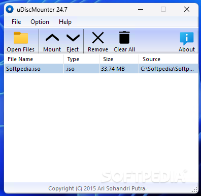

Innovative Software for Every Need.

Phone/WhatsApp: +62 813 5356 1716
Innovative Software for Every Need. |
|
Email: users.ariproject@gmail.com Phone/WhatsApp: +62 813 5356 1716 |
uDiscMounter |
Mount CD/DVD image files on your Windows computer thanks to this application, which supports ISO, BIN, IMG and several other formats |
 |
| uDiscMounter | 24.7 | 2.4 MB | Download | 5.0 |
Accessing files from CD/DVD images has never been easier with uDiscMounter! This program is designed to help you mount disc image files such as ISO, BIN, IMG, and various other formats into a virtual drive, so that you can directly open and browse their contents in Windows Explorer. What makes uDiscMounter special?
Who is it for?
How does it work?
With uDiscMounter, you get a fast, practical, and hassle-free experience managing disk images. Download now and enjoy easy access to your files! |
Copyright (C) 2025 Ari Sohandri Putra. Read License Terms